Это сыр с голубой плесенью. Она есть не только на корочке, но и внутри продукта. По содержанию белка и питательных элементов Рокфор не уступает дорогим сорта мяса. Его выдерживают в специальных пещерах при определенных температурных условиях и влажности воздуха.
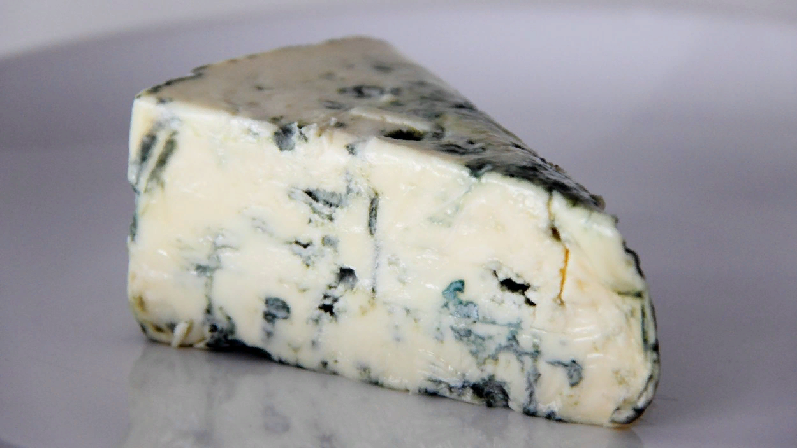
Дор Блю
Рецепт сыра был создан в середине 20 века и до сих пор он мало кому известен. Рецептуру приготовления Дор Блю хранят в строгой тайне. Он производится из коровьего молока с добавлением благородной плесени. В отличие от других видов с плесенью Дор Блю имеет менее соленый вкус.
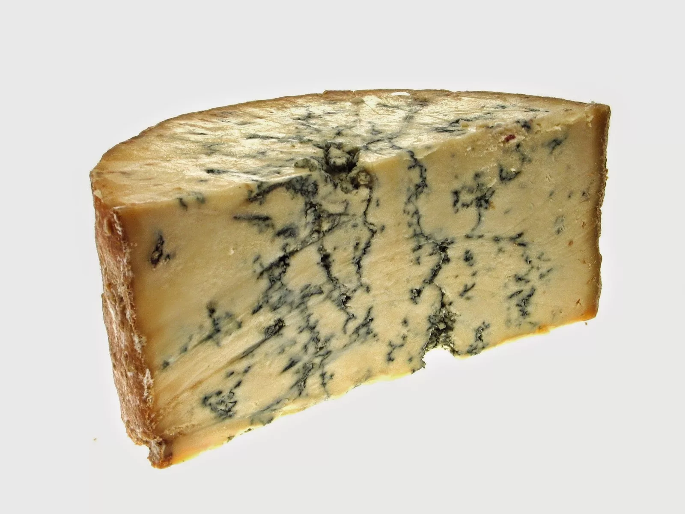
Стилтон
это дешевый аналог Дор Блю. Его выдерживают около 9 месяцев. Парфюмеры настолько оценили непревзойденный аромат продукта, что стали добавлять его в свои композиции духов.
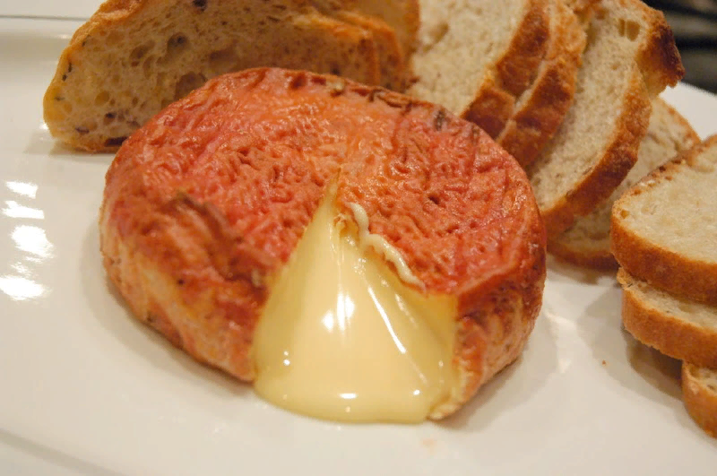
Эпуасс
Сыр хранят в специальных помещениях с деревянными решетчатыми полками. После того, как на поверхности продукта появится красная плесень, его обрабатывают солевым раствором. Это позволяет предотвратить попадание плесени внутрь.
Твердые сыры
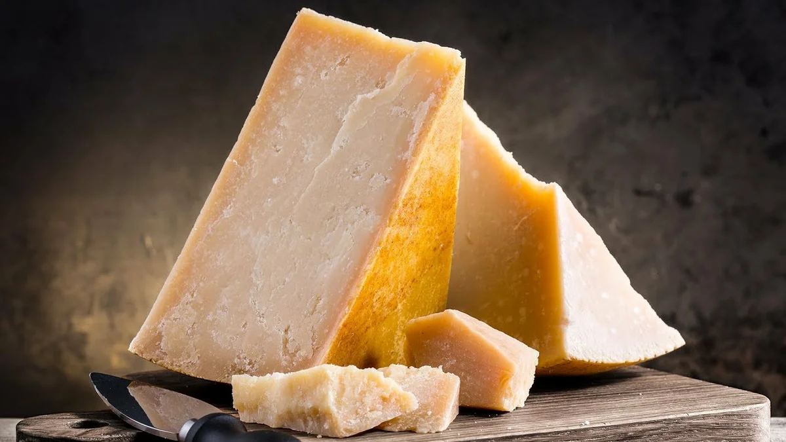
Пармезан
Это сыр с солоноватым слегка кисловатым привкусом. Он имеет рассыпчатую структуру, поэтому для приготовления бутербродов не подойдет.
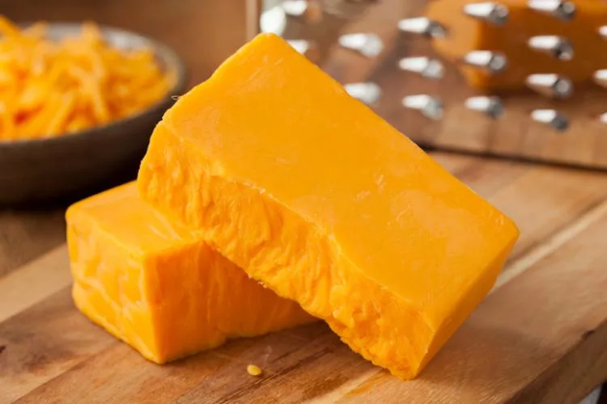
Чеддер
Это кисломолочное изделие с желтоватым оттенком и приятным ореховым вкусом. Чеддер имеет пластичную структуру.
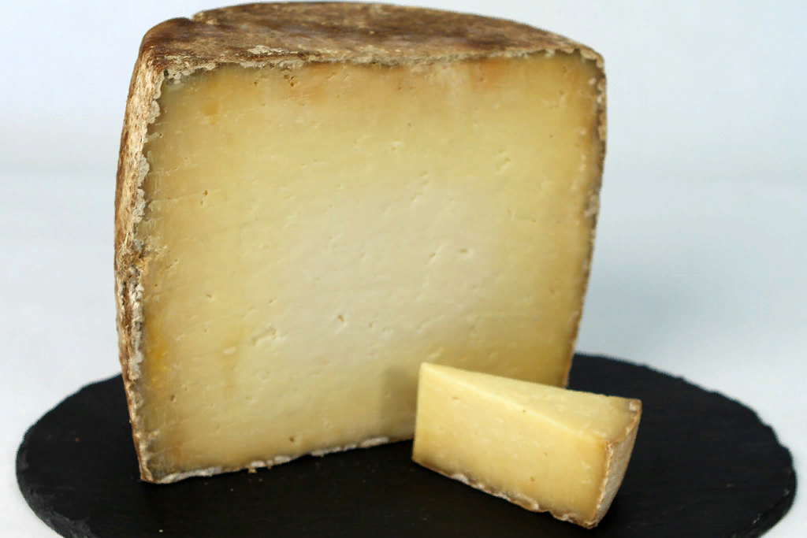
Канталь
Твердый сыр с острым вкусом. Чем больше выдержка продукта, тем ярче и острее его вкус. Отличительная черта Канталь - это низкая калорийность. Им предпочитают питаться спортсмены и теп. кто следит за фигурой.
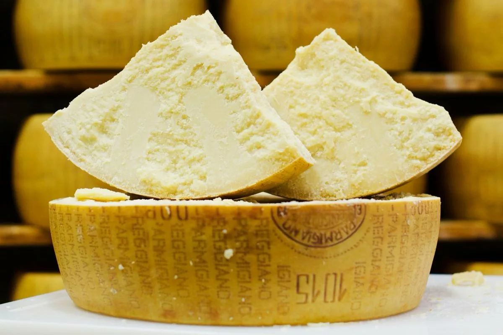
Пармиджано Реджано
Универсальный итальянский сыр. Его можно добавлять во все закуски, выпечку и пасту. Пармиджано устойчив к высоким температурам и плохо плавится.
Мягкие сыры
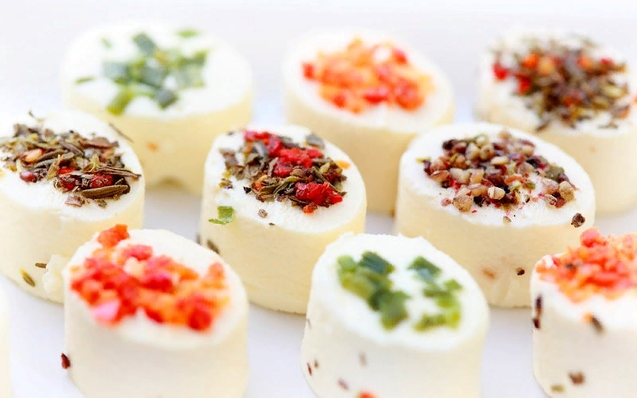
Аперифрэ
Его текстура также напоминает творог. Продается мягкий сыр в кружочках, как дополнение к алкогольным напиткам.
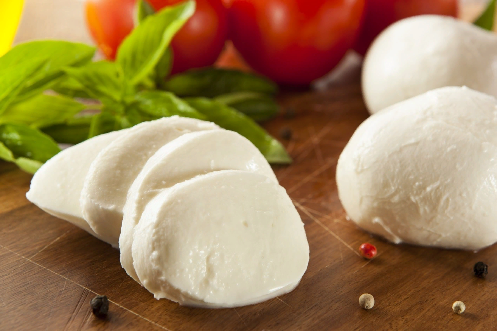
Моцарелла
Известный вид традиционно производят из молока буйволиц. Используют сыр для приготовления пиццы и редко потребляют, как самостоятельный продукт.
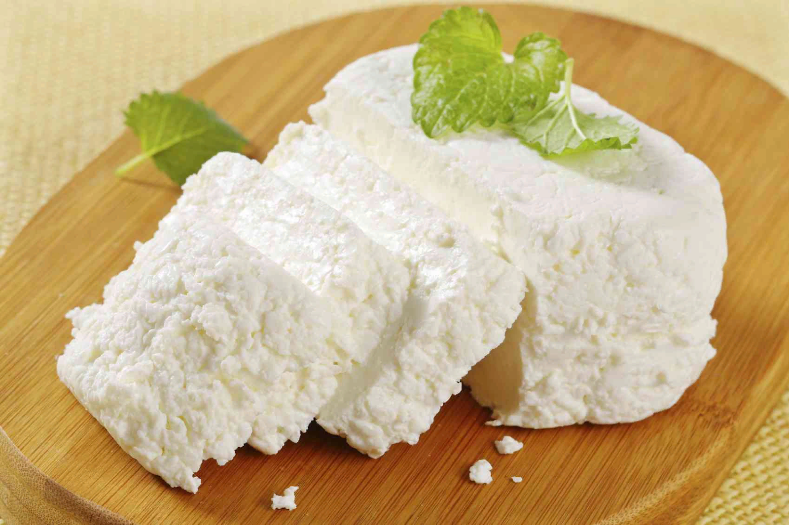
Рикотта
Сыр с нежным сливочным вкусом и творожистой консистенцией.
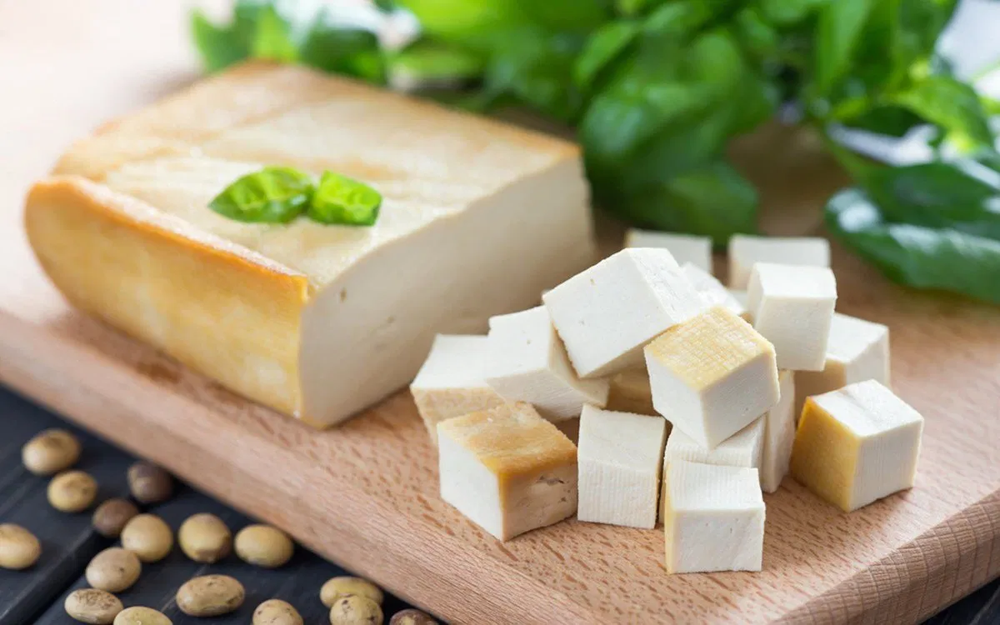
Тофу
Это сыр, который идеально подходит для вегетарианцев. Вместо животного белка в нем есть соя.